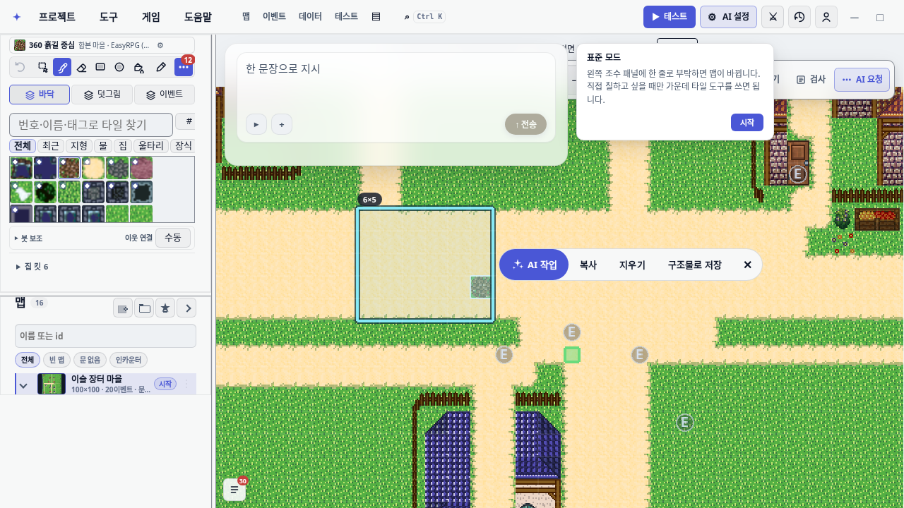
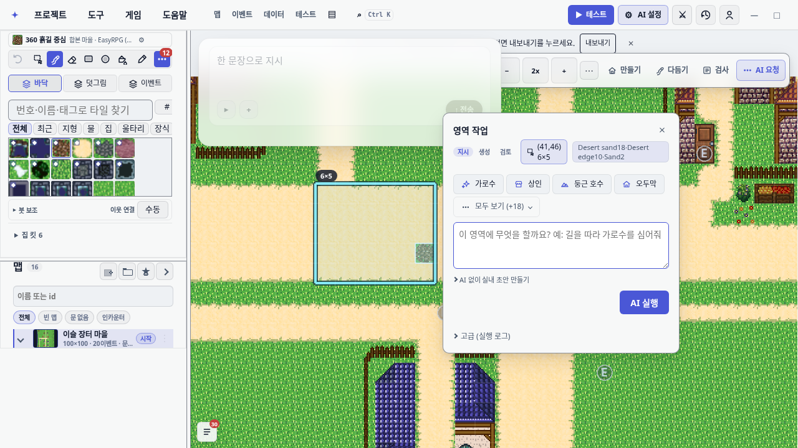
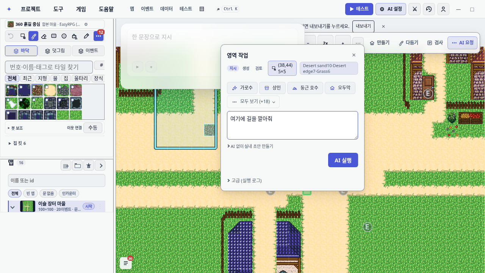
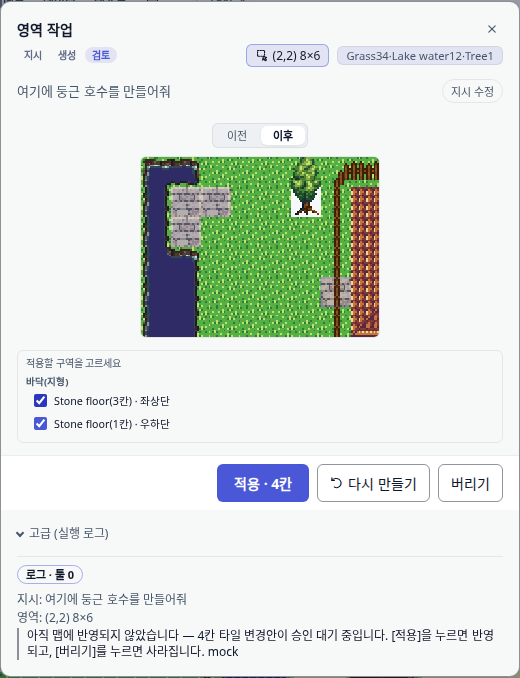
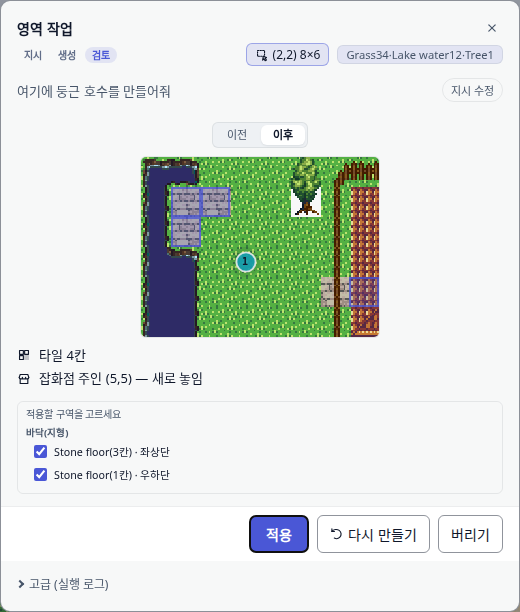
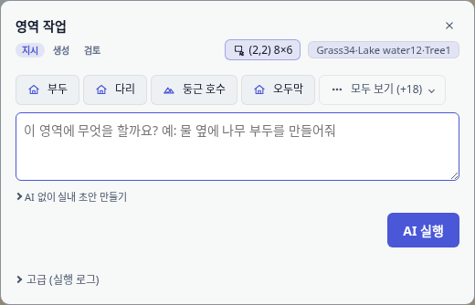
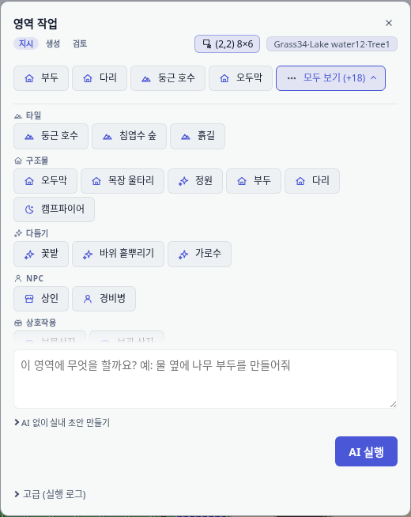

우클릭 영역작업 UI/UX 재정비
맵 캔버스 우클릭 영역작업의 네 층을 정리했다: 제스처 계약, 창의 모달성, 드래그 성능, 발견성.
2026-08-30 감사(reports/region-task-ui/REPORT.html)는 창 내부만 봤고 이 네 층은 손대지 않았다.
이 보고서의 모든 화면은 실행 중인 편집기에서 e2e 로 찍은 것이고, 성능 수치는 목업 카운터가 아니라
실제 좌측 독 조립 횟수다.
1. 제스처 — 우클릭 드래그는 «영역을 잡는 동작»이다
| 전 | 후 | |
|---|---|---|
| 드래그를 놓았을 때 | 영역 작업 창이 즉시 열린다 | 놓은 자리에 액션 바 (✨AI 작업 · 복사 · 붙여넣기 · 지우기 · 구조물로 저장 · ✕) |
| 복사·지우기까지의 거리 | Esc(=취소 어포던스)로 창을 닫아야 도달 | 바로 옆 버튼 |
| 실수로 드래그했을 때 | 큰 창이 뜬다 | 선택만 잡힌다 |
| 크기(W×H) 표시 | 칩 바 안 정적 텍스트 8×6 — 버튼 줄에 앉아 버튼처럼 읽혔다 |
선택 사각형 옆 배지. 드래그 중에도 갱신된다 |

✨AI 작업 이 첫 주 버튼이다. 선택 사각형 위 6×5 배지가
크기를 말하고, 테두리는 이중 스트로크(어두운 바깥 + 밝은 안쪽)라 잔디·모래 어디서든 경계가 읽힌다.
창은 뜨지 않는다 — e2e 가 region-task-popover 개수 0 을 단정한다.
AI 작업 이 맨 앞으로 왔다.지우기 는 한 번 더 물어본다 — 바로 옆이 복사 라 오클릭 거리가 짧다.2. 창을 비모달로
팝오버 변형의 백드롭은 position:fixed; inset:0 이었다. 창이 떠 있는 동안 팬·줌·영역 재지정이
불가능했고 — 자기가 바꿀 대상을 볼 수 없었다 — 바깥 클릭은 곧 discardAndClose() 였다.
창을 대상 옆에 세우는 placePopoverBesideRect 까지 만들어 둔 걸 보면 "대상을 보면서 작업한다"가
원래 의도였는데 백드롭이 그걸 무효화하고 있었다.
- 팝오버 변형 백드롭 → 투명 +
pointer-events:none. 요소는 남긴다 — coachMarks 의 "모달 열림" 판정이.region-task-backdrop을 찾는다.pointer-events:none이면event.target === backdrop이 성립하지 않아 바깥클릭-폐기는 자연히 죽는다. - 중앙 모달 변형(메뉴 진입)은 그대로 모달이다.
- Escape 를
document단축키 경로에도 걸어 포커스가 캔버스에 있어도 닫힌다. 캔버스의 Esc 핸들러는 창이 열려 있으면 소유권을 창에 넘긴다 — Esc 1회는 창만 닫고 선택은 남는다.
재지정 — 창이 새 영역으로 갈아 끼워진다
창이 비모달이 되면 창을 띄운 채 캔버스에서 영역을 다시 잡을 수 있다. 그때 선택만 바뀌고 창이 옛 영역을 들고 있으면 「적용」이 화면에 보이는 선택과 다른 곳을 고친다. 이건 비모달화가 만들어낸 새 함정이라 같이 막았다: 지시 단계라면 창이 새 영역으로 갈아 끼워지고 적어 둔 지시문이 따라온다. 실행 중·검토 중에는 영역이 잠긴다 — 돌고 있는 작업이나 승인 대기 결과를 말없이 버리지 않는다.

AI 작업 이 창을 연다. 창은 대상 사각형 옆에 서고 캔버스는 어두워지지 않는다.
(38,44) 5×5 로 바뀌고 입력해 둔
여기에 길을 깔아줘 는 그대로 따라왔다.
3. 드래그 렉 — 숫자로
updateRightRegionGesture 는 pointermove 마다 selectTileRegion 을 부르고,
editorState.subscribe(() => refreshPanels()) 는 키 검사도 코얼레싱도 없이 좌측 독
tiles/maps/assistant 의 render(host) 를 처음부터 다시 실행했다.
게다가 selectTileRegion 은 매번 새 객체 리터럴을 만들고 editorState.set 의
무변경 판정은 참조 비교라, 같은 칸 안에서 마우스를 흔드는 프레임도 전부 통지가 됐다.
| 시나리오 | 전 | 후 | 가드 |
|---|---|---|---|
| 40프레임 · 8단계 드래그 → 좌측 독 재구축 | 40회 | 1회 | test/rightDragPanelRebuilds.test.ts |
| 같은 사각형 30회 재제출 → 재구축 | 30회 | 0회 | |
드래그 2초 중 프로젝트 전체 JSON.stringify |
13회 | 1회 | 후행 엣지 디바운스 |
세 방어선을 걸었다. ① selectTileRegion 이 값 비교로 무변경 통지를 삼킨다.
② editorState 통지 N개가 한 틱에서 재구축 1회로 접힌다(queueMicrotask,
헤드리스 폴백 setTimeout).
③ 숨은 project-export-json 미러의 디바운스를 선행 잠금(if (timer) return)에서
후행 엣지로 바꿨다 — 선행 잠금은 버스트 중 150ms 마다 타이머가 재무장되어 반복 직렬화됐다.
재구축 횟수는 목업 renderTilePalette 호출 수로 센다. renderDockPanels 를 직접
목업하면 독이 실제로 조립되지 않아 계약이 사라진다. 「빨라졌다」는 체감 보고 대신, 고치기 전 코드로
되돌려 같은 테스트를 돌려 40/30 이라는 전 값을 받아 적었다.
4. 창 내부 위계
적용 버튼을 하나로
검토 단계에 적용 버튼이 둘이었고 서로 다른 범위를 가졌다. 하단 CTA 적용 · N칸 은
언제나 전량이었고, 체크를 반영하는 선택한 M칸만 적용 은 본문 위쪽에 따로 생겼다.
즉 구역 체크를 풀고 그 아래 큰 버튼을 누르면 의도와 반대로 전부 적용됐다.
- 버튼 하나가 체크 상태를 읽어 범위를 정한다. 전부 체크면
적용 · N칸, 일부면선택한 M칸만 적용, 전부 풀면적용할 구역을 고르세요+ disabled. - 라벨은 청크 개수가 아니라 칸 수다. 예전에는 37칸짜리 덩어리 하나를 고르면 「선택 1칸 적용」이라고 찍었다 — 정반대로 읽히는 오표기였다.
- 체크를 푼 덩어리는 미리보기에서도 빠진 것으로 보인다(
is-excluded) — 어느 칸을 버리는지가 보인다.

적용 · 4칸)이고 체크를 풀면
라벨과 범위가 함께 좁아진다. region-task-partial-apply testid 는 사라졌다.

카테고리 필터 8개 → 상태 없는 「모두 보기」 시트
지시 단계는 380px 폭에 세로 블록 6개였다. 카테고리 칩 8개가 가로 스크롤러로 상주해 다섯 번째 칩이
경계에서 반쯤 잘렸는데 스크롤 어포던스가 없었다. 칩을 누르면 아래 추천 줄이 그 계열로 갈아치워져
"지금 무엇을 보고 있나"가 상태로 남았고 — / 자동완성 범위까지 그 상태를 조용히 따라갔다.
이제 필터 상태가 없다. 추천 줄은 항상 이 영역에 맞춘 4개고, 전체 명령은 모두 보기 (+18) 시트가
계열 소제목으로 묶어 한 번에 펼친다. (+18) 이 범위를 말해 주므로 "추천 4개가 전부"라는 오해를
막던 원래 의도도 지킨다. 시트는 세로로 흐르고, 넘칠 때 아래쪽 페이드로 "더 있다"를 말한다.

모두 보기 (+18). 잘리는 칩이 없다.
5. 발견성
| 표면 | 전 | 후 |
|---|---|---|
| 도움말 단축키 표 · 본문 | "우클릭" 항목 0건 (가운데 드래그 는 있었다) |
우클릭 → 타일 집기 / 우클릭 드래그 → 영역 선택 |
| 첫 사용 힌트 | 선택 도구 전환 시점에 뜬다 — 우클릭 사용자를 못 잡고, 기본 모드는 도구막대에 선택 도구가 없어 아예 안 뜬다 | 첫 우클릭 드래그 성공 직후 1회
(oprn:hint-right-drag-region-v1, 기존 키와 분리) |
좌드래그 선택 도구용 기존 힌트는 그대로 뒀다 — 둘은 다른 제스처고, 키가 달라 한쪽을 봤다고 다른 쪽이 사라지지 않는다(단위 테스트가 이 분리를 단정한다).
6. 검증
| 게이트 | 결과 |
|---|---|
| 통과 유닛 (관련 19파일) |
159/162 통과. 빨간 3건(mapEditCommands 2 + autosaveStatus 1)은
기반 커밋 84bfc655 를 뜬 분리 워크트리에서 같은 3건이 나온다 — 이 브랜치가
새로 만든 실패는 0. (이 저장소 전체 스위트는 clean main 에서도 84~93 파일이 빨갛다.)
|
| 통과 e2e |
15/15. region-task-redesign · right-drag-chips-anchored ·
region-task-monochrome. 출력에 [WebServer] 줄이 있어 남의 dev 서버가 아닌
자기 서버에 붙었음을 확인.
|
통과 gates:css |
회귀 0건. hexLiterals 1697 → 1697(±0), undefinedVars 63 → 61(−2).
--save-baseline 은 쓰지 않았다(래칫을 영구히 풀기 때문).
|
| 통과 성능 실측 | 재구축 40 → 1, 30 → 0. 영구 가드로 테스트에 남겼다. |
계약이 뒤집힌 테스트
region-task-redesign.spec.ts— "우클릭 드래그는 영역 작업 창을 바로 띄운다" 를 의도적으로 뒤집었다: 액션 바가 뜨고AI 작업이 창을 연다._verify_right_drag_chips.spec.ts→right-drag-chips-anchored.spec.ts. 진단 접두어를 떼고 정식 스펙으로 승격. 창이 칩 바를 가리던 시기에는 이 단정이 구조적으로 성립할 수 없어 방치돼 있었다.regionTaskUiAudit.test.ts의 카테고리 필터 관련 2건은 지켜야 할 대상이 사라져 삭제하고, "전체 명령이 계열별로 한 번에 펼쳐진다" 로 대체했다.
7. 담지 않은 것
- 제외 선택 사각형 리사이즈 핸들 — 실제 리사이즈 구현 없이 핸들만 그리면 거짓 어포던스다. 재지정은 "다시 드래그"로 해결했다.
- 제외 마칭앤츠 애니메이션 — 이 편집기는 매 프레임 작업으로 렉을 겪은 이력이 있다. 정적 이중 스트로크로 목적(경계 판독)을 달성했다.
- 제외 칩 바 오버플로
⋯메뉴 — 접힌 컨테이너가 기존 testid 경로를 깨고, 이 저장소는details/[open]에 데인 이력이 있다. - 제외 중앙 모달(메뉴 진입)의 모달성 · 수정자 키 분기(Shift+우드래그) · AI 실행 결과 품질/프롬프트/툴 계약.